→ ฝึกกับโจทย์จริง: Bus Company (Assignment 1 ทั้งฉบับ)
Lecture 1 — Simple Linear Regression
บทเรียนนี้ตอบ 4 เรื่องที่ต้องทำได้ก่อนเข้าสอบ: เขียนสมการโมเดลถูก (พร้อม assumption ของ error term), เช็คได้ว่าโมเดลใช้ได้ไหม (assumption checking), อ่าน output จาก summary(lm(...)) ได้ทุกบรรทัด ไม่ใช่แค่มองหา p-value, และ เขียนประโยคแปลผล (interpretation) ของสัมประสิทธิ์ที่ได้ — ซึ่งเป็นทักษะที่ออกสอบหนักที่สุดของวิชานี้ตามที่คุณระบุไว้.
โมเดล deterministic คำนวณค่าตัวแปรตามได้เป๊ะจากตัวแปรอิสระ เช่น \(\text{Profit} = (\text{Price} - \text{Variable cost}) \times \text{Units sold} - \text{Fixed costs}\) — ใส่ตัวเลขเข้าไปแล้วได้คำตอบเดียวไม่มีความคลาดเคลื่อน. ปัญหาคือข้อมูลจริงไม่เป็นแบบนั้น: บ้านสองหลังขนาดเท่ากันเป๊ะ (ตารางฟุตเท่ากัน) แทบไม่มีทางขายได้ราคาเท่ากันเป๊ะ — มีปัจจัยอื่นที่โมเดลไม่ได้ใส่ (ทำเล สภาพบ้าน ฤดูกาลที่ขาย) ที่ทำให้ราคาจริงเบี่ยงจากที่โมเดลทำนายไว้เสมอ.
Probabilistic model แก้ปัญหานี้โดยเริ่มจากโมเดล deterministic ที่ประมาณความสัมพันธ์ได้ดีที่สุด แล้วบวกพจน์สุ่ม (error term) เข้าไปเพื่อจับความคลาดเคลื่อนที่เหลือ — นี่คือเหตุผลที่ทุกสมการถดถอยในวิชานี้มี \(\varepsilon\) ต่อท้ายเสมอ ไม่ใช่แค่ธรรมเนียมสัญกรณ์.
ในสมการถดถอย \(X\) เรียก independent/explanatory variable และ \(Y\) เรียก dependent/response variable. เป้าหมายของ regression มี 2 อย่าง: อธิบายความสัมพันธ์ (association) ระหว่าง X กับ Y และทำนาย Y จาก X ในอนาคต — สังเกตว่าไม่มี "อธิบายเชิงเหตุผล (causal)" อยู่ในรายการนี้ ซึ่งเป็นจุดที่คนตีความสมการถดถอยผิดบ่อยที่สุด.
คำว่า "regression" มาจากงานของ Francis Galton ในศตวรรษที่ 19 ที่ศึกษาความสูงของพ่อแม่กับลูก และพบปรากฏการณ์ที่เรียกว่า "regression toward mediocrity" (ปัจจุบันเรียก regression toward the mean):
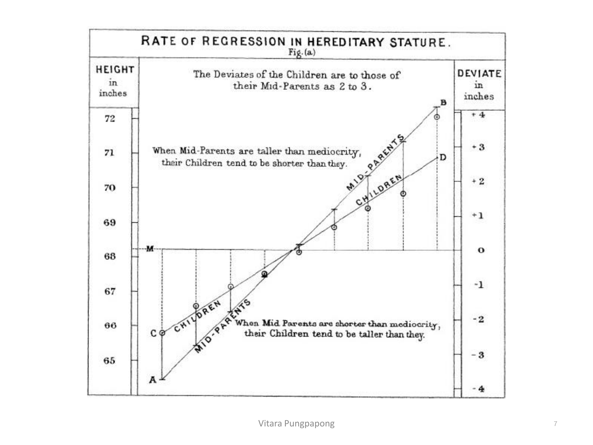
อ่านตัวเลขในภาพ: ถ้าพ่อแม่เฉลี่ย (mid-parent) สูงกว่าค่าเฉลี่ยประชากร 3 นิ้ว ลูกจะสูงกว่าค่าเฉลี่ยเพียง 2 นิ้ว เท่านั้น — ไม่ใช่ 3 นิ้วเท่าพ่อแม่ (สังเกตอัตราส่วน "2 to 3" ที่เขียนกำกับไว้ในภาพต้นฉบับ). พ่อแม่ที่สูงผิดปกติ ลูกจะสูง "น้อยลง" กว่าพ่อแม่ (ถอยเข้าใกล้ค่าเฉลี่ยประชากร) และพ่อแม่ที่เตี้ยผิดปกติ ลูกจะเตี้ย "น้อยลง" เช่นกัน — นี่คือที่มาของคำว่า "regression" (การถอยกลับ) ที่ใช้เรียกเทคนิคทั้งตระกูลนี้มาจนถึงทุกวันนี้ ทั้งที่ปัจจุบันเราใช้ regression กับโจทย์ที่ไม่เกี่ยวกับ "การถอยกลับสู่ค่าเฉลี่ย" เลยก็ได้.
สไลด์ยกตัวอย่างคลาสสิกของ confounding variable: ยอดขายไอศกรีมกับจำนวนนักท่องเที่ยวมีความสัมพันธ์เชิงบวกชัดเจนในข้อมูล แต่ทั้งคู่ถูกขับเคลื่อนโดยตัวแปรกวน (confounder) ตัวเดียวกันคืออุณหภูมิ — วันที่ร้อน คนออกไปเที่ยวเยอะขึ้นและไอศกรีมขายดีขึ้นพร้อมกัน โดยที่นักท่องเที่ยวไม่ได้เป็น "สาเหตุ" ที่ทำให้ไอศกรีมขายดีเลย:
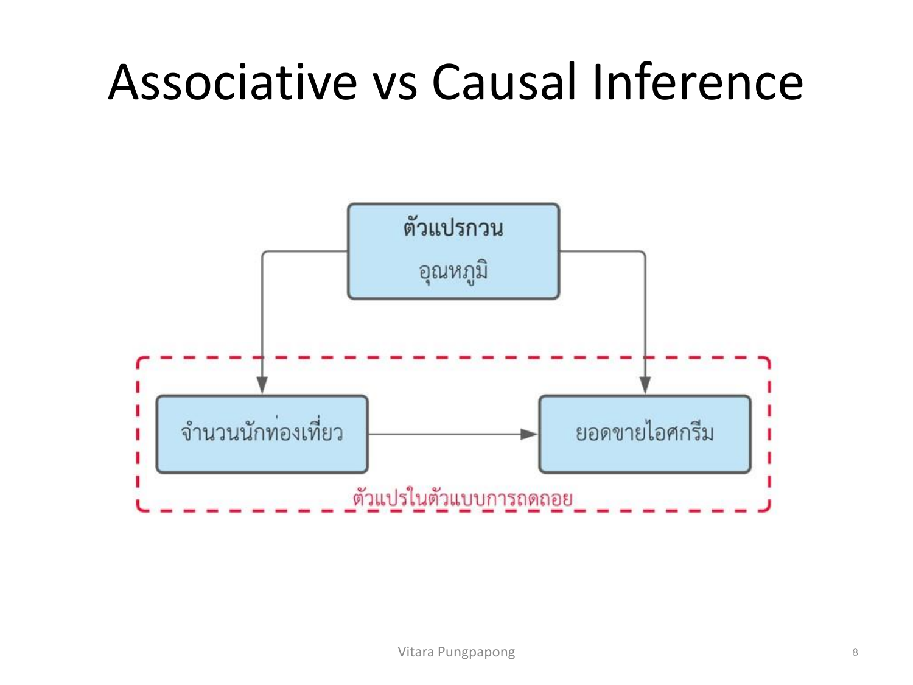
ถ้าเก็บข้อมูลแบบสังเกตการณ์ (observational) แล้วรัน lm(ยอดขายไอศกรีม ~ จำนวนนักท่องเที่ยว) จะได้สัมประสิทธิ์เป็นบวกและมีนัยสำคัญทางสถิติแน่นอน — แต่ห้ามสรุปว่านักท่องเที่ยวทำให้ไอศกรีมขายดีขึ้น เพราะกล่องเส้นประสีแดงในภาพ (ตัวแปรที่อยู่ในตัวแบบการถดถอยจริง) ไม่ได้ครอบคลุมอุณหภูมิ ซึ่งเป็นตัวขับเคลื่อนที่แท้จริงของทั้งสองตัว.
ทางแก้ที่ทำให้สรุปเชิงเหตุผล (causal) ได้ คือการทำ experimental study — สุ่มกำหนดค่าตัวแปรอิสระเอง แทนที่จะปล่อยให้มันเกิดขึ้นเองตามธรรมชาติ. ตัวอย่างในสไลด์: สุ่มต้นทานตะวัน 10 ต้น แบ่ง 5 ต้นให้แสง 100,000 ลักซ์ อีก 5 ต้นให้แสง 50,000 ลักซ์ วัดความสูงหลัง 2 สัปดาห์:
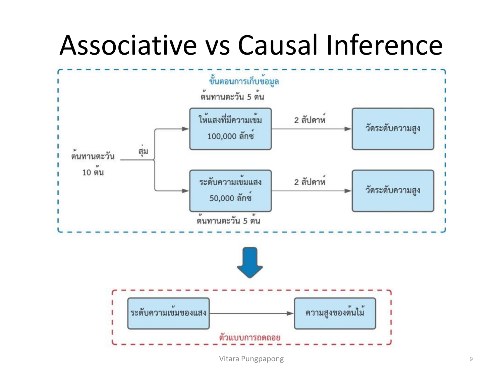
เพราะสุ่ม (randomize) ว่าต้นไหนได้แสงระดับใด ตัวแปรกวนที่อาจจะมีอยู่ (เช่น พันธุกรรมของเมล็ด ความสมบูรณ์ของดินเดิม) ถูกกระจายเท่า ๆ กันในสองกลุ่มโดยเฉลี่ย — ถ้าความสูงต่างกันอย่างมีนัยสำคัญระหว่างสองกลุ่ม จึงสรุปเชิงเหตุผลได้ว่าความเข้มแสงเป็นสาเหตุของความสูงที่ต่างกัน ไม่ใช่แค่ "สัมพันธ์กัน" เฉย ๆ — กฎทอง: ข้อมูล observational ให้ได้แค่ข้อสรุปเชิง association; ต้องมี randomized experiment ถึงจะสรุปเชิง causal ได้
ข้อดี/ข้อเสียของ linear regression โดยรวม: ข้อดี — ใช้แพร่หลายที่สุดสำหรับข้อมูลตัวเลข, ปรับใช้ได้กับโจทย์หลากหลาย, ให้ทั้งขนาดและทิศทางของความสัมพันธ์, ทฤษฎีการอนุมานทางสถิติศึกษามาอย่างละเอียด. ข้อเสีย — ตั้งสมมติฐาน (assumption) เกี่ยวกับข้อมูลค่อนข้างเข้มงวด และผู้ใช้ต้องกำหนดรูปแบบโมเดล (เชิงเส้น/ไม่เชิงเส้น) ไว้ล่วงหน้าเอง.
Simple Linear Regression คือการถดถอยตัวแปรตาม Y ตัวเดียวบนตัวแปรอิสระ X ตัวเดียว จากคู่ข้อมูล \((X_i, Y_i)\) สำหรับ \(i = 1, 2, \ldots, n\) โมเดลเขียนเป็น:
เมื่อวาดในกราฟสองมิติ \(\hat{\beta}_0\) คือจุดตัดแกน Y (y-intercept) และ \(\hat{\beta}_1\) คือความชัน (slope = rise/run) ของเส้นถดถอยที่ประมาณได้ \(\hat{Y} = \hat{\beta}_0 + \hat{\beta}_1 X\):
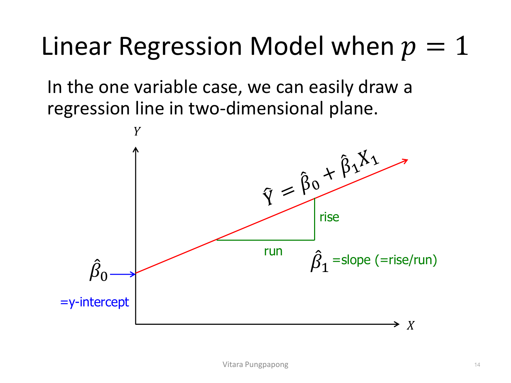
จำไว้เสมอ: \(\beta_0, \beta_1\) (ไม่มีหมวก) คือพารามิเตอร์ทฤษฎีที่ไม่รู้ค่าจริง ส่วน \(\hat{\beta}_0, \hat{\beta}_1\) (มีหมวก) คือค่าประมาณจากข้อมูลตัวอย่าง — ข้อสอบชอบเช็คว่าเขียนหมวกถูกจุดหรือไม่ เพราะสื่อความหมายต่างกันโดยสิ้นเชิง (ค่าจริงที่ไม่มีทางรู้ vs ค่าประมาณที่คำนวณได้จากข้อมูล).
\(Sales_i = \beta_0 + \beta_1 Ad_i + \varepsilon_i\), สำหรับ i = 1,…,24
โดย \(\beta_0\) = ยอดขายคาดการณ์เมื่องบโฆษณาเท่ากับ 0, \(\beta_1\) = ยอดขายที่เปลี่ยนไปโดยเฉลี่ยเมื่องบโฆษณาเพิ่มขึ้น 1 ล้านบาท, \(\varepsilon_i\) = ความคลาดเคลื่อนของเดือนที่ i ที่โมเดลอธิบายไม่ได้
Assumption: \(\varepsilon_i \sim \text{iid } N(0,\sigma^2)\) — error แต่ละเดือนมีค่าเฉลี่ยเป็นศูนย์ เป็นอิสระต่อกัน มี variance คงที่ทุกระดับของงบโฆษณา และแจกแจงแบบปกติ
นี่คือหัวใจของ "assumption checking" ที่ใช้ทั้งวิชา สไลด์ตั้งไว้ 4 ข้อ:
ภาพนี้แปล assumption 4 ข้อให้เห็นเป็นรูปธรรม: จุดข้อมูลแต่ละจุด \(y_i\) คือค่าจริงที่สังเกตได้ ส่วนเส้นประสีเขียว \(y = \beta_0 + \beta_1 x\) คือค่าเฉลี่ยทฤษฎีที่โมเดลทำนาย — \(\varepsilon_i\) (ลูกศรสีแดง) คือระยะห่างแนวตั้งระหว่างจุดจริงกับเส้นทฤษฎีที่จุดนั้น. สังเกตว่าจุดข้อมูลกระจายอยู่รอบ ๆ เส้นทั้งด้านบนและด้านล่างในปริมาณใกล้เคียงกันตลอดช่วง X — นี่คือหน้าตาของ assumption ที่ "ผ่าน":
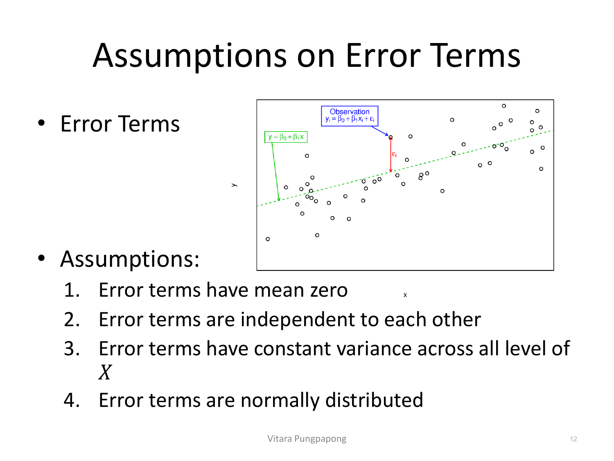
ภาพต่อไปนี้ (จาก Ramsey & Schafer) แปล assumption 4 ข้อให้เป็น "การแจกแจงของ Y ที่แต่ละระดับ X" โดยตรง: ที่ทุกค่าของ X บนเส้นถดถอย มีระฆังคว่ำ (normal distribution) วางอยู่ — ระฆังแต่ละลูกมีศูนย์กลางอยู่บนเส้น \(\beta_0+\beta_1 X\) พอดี (= assumption ข้อ 1 mean เป็นศูนย์ที่ทุกจุด แปลว่า \(E[Y|X]=\beta_0+\beta_1 X\)) และมีความกว้าง (variance) เท่ากันทุกลูก ไม่ว่า X จะมีค่าเท่าไร (= assumption ข้อ 3 constant variance):
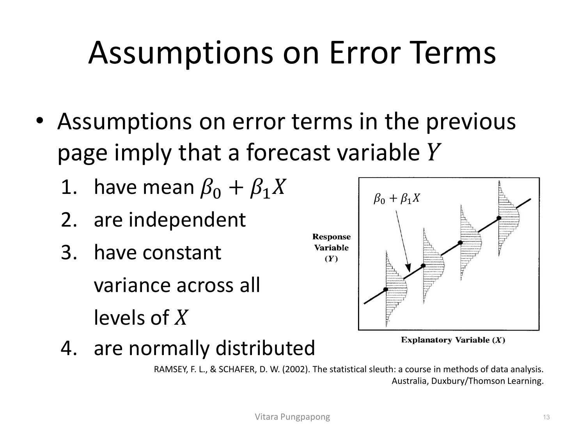
ถ้าระฆังลูกไหนกว้างกว่าลูกอื่นอย่างชัดเจน (เช่น กว้างขึ้นเรื่อย ๆ ตาม X) นั่นคือการละเมิด assumption ข้อ 3 หรือที่เรียกว่า heteroscedasticity — และถ้าระฆังไม่สมมาตร (เบ้ซ้าย/ขวา) คือการละเมิดข้อ 4 (normality) — นี่คือสิ่งที่ diagnostic plot ใน R จะให้คุณตรวจสอบจริง (Residuals vs Fitted สำหรับข้อ 1&3, Normal Q-Q สำหรับข้อ 4, Durbin-Watson หรือดูลำดับข้อมูลสำหรับข้อ 2) — รายละเอียดเต็มอยู่ใน Lecture 3 (Regression Diagnostics) แต่ต้องจำ 4 ข้อนี้ให้ขึ้นใจตั้งแต่บทนี้ เพราะทุกโจทย์ที่ให้ fit โมเดลจะถามต่อว่า "assumption เป็นไปตามที่ตั้งไว้หรือไม่"
ก่อนฟิตโมเดลใด ๆ สไลด์ย้ำให้ทำ scatter plot ก่อนเป็นขั้นแรกเสมอ เพื่อดูว่าความสัมพันธ์ระหว่าง X กับ Y เป็นแบบไหน — เพราะ regression เชิงเส้นใช้ได้ดีเฉพาะกรณีความสัมพันธ์เป็นเส้นตรงเท่านั้น:
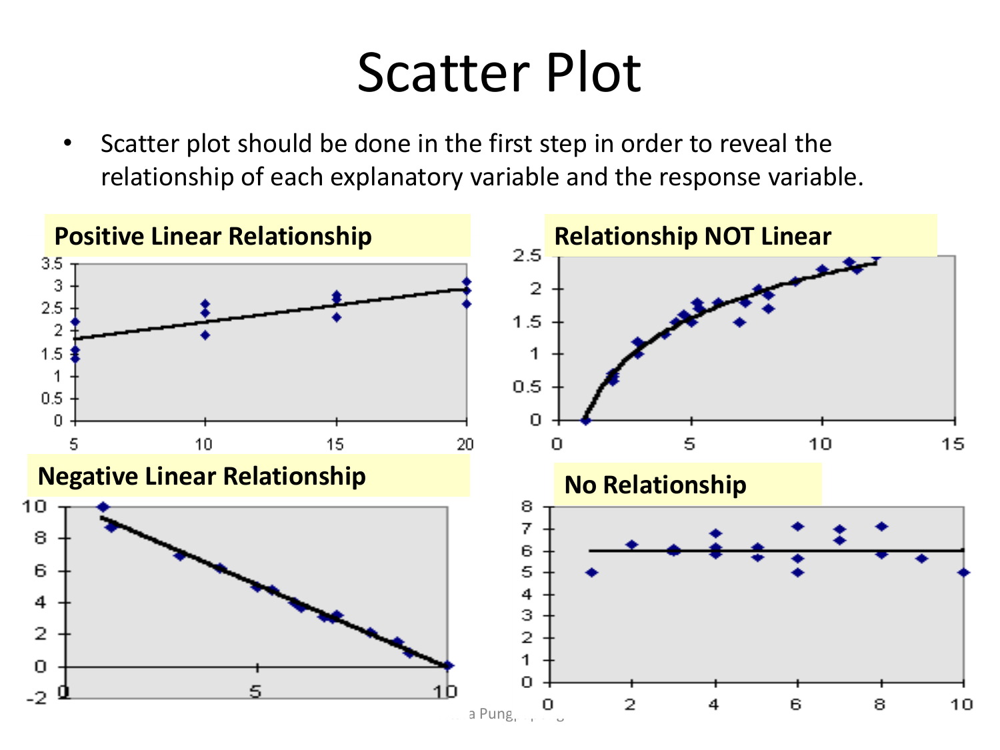
สังเกตกราฟบนขวา "Relationship NOT Linear" — จุดข้อมูลโค้งเป็นรูป log/sqrt ชัดเจน ถ้าฟิต simple linear regression ตรง ๆ กับข้อมูลแบบนี้ เส้นตรงจะพลาดทั้งช่วงต้น (underestimate) และช่วงปลาย (underestimate เช่นกัน) แต่ overestimate ช่วงกลาง — นี่คือเหตุผลที่ scatter plot ต้องทำก่อน ไม่ใช่หลัง fit โมเดล.
ใน R คำสั่งพื้นฐานคือ plot(x, y, xlab=..., ylab=...) ปรับแต่งได้ด้วย cex (ขนาดตัวอักษร/สัญลักษณ์), pch (รูปทรงจุด), lty/lwd (ชนิด/ความหนาเส้น) — ตัวเลือกเหล่านี้เป็น syntax ล้วน ๆ ไม่มีเนื้อหาทฤษฎีให้ทำ quiz เพิ่ม สรุปไว้ในตารางอ้างอิงแล้วที่ reference sheet ท้ายบทเรียน.
ตัวอย่างที่จะใช้ตลอดบทนี้ — ยอดขายรถ 10 เดือน:
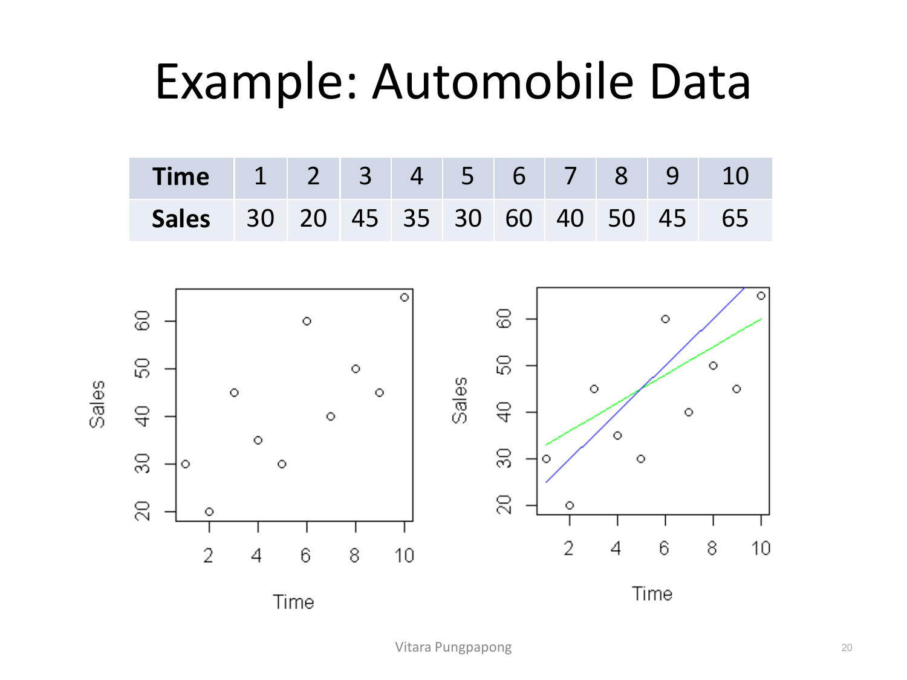
ข้อมูลจริง: Time = 1..10, Sales = 30,20,45,35,30,60,40,50,45,65. กราฟขวาลองวาดเส้นถดถอยตั้งต้น 2 เส้น (สีเขียว/สีน้ำเงิน) ทับข้อมูลไว้เปรียบเทียบ — คำถามที่ Least Squares Method จะตอบต่อไปคือ "เส้นไหนคือเส้นที่ดีที่สุด" อย่างเป็นระบบ ไม่ใช่กะด้วยตา ใน R เขียนโค้ดตรง ๆ ได้ดังนี้:
x<-1:10
y<-c(30,20,45,35,30,60,40,50,45,65)
plot(x,y,xlab="Time",ylab="Sales")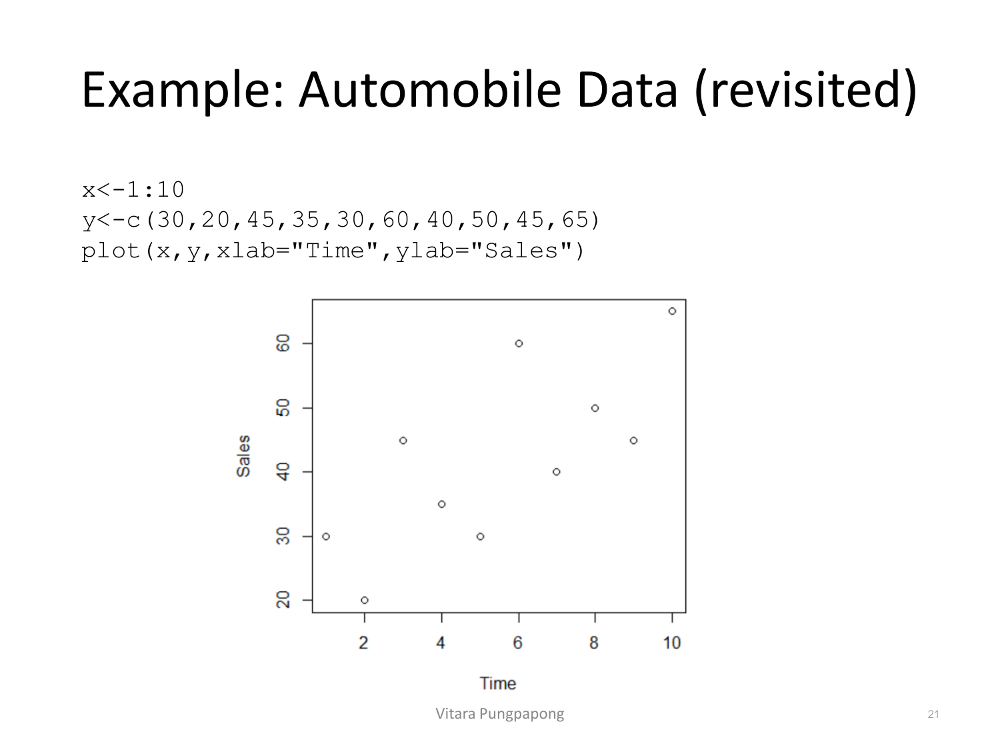
แนวคิด OLS: หา \(\hat{\beta}_0, \hat{\beta}_1\) ที่ทำให้เส้นถดถอย "ฟิต" ข้อมูลดีที่สุด โดยวัดความ fit จาก residual \(e_i = Y_i - \hat{Y}_i\) (ระยะห่างแนวตั้งจากจุดจริงถึงเส้นทำนาย) ดังภาพ:
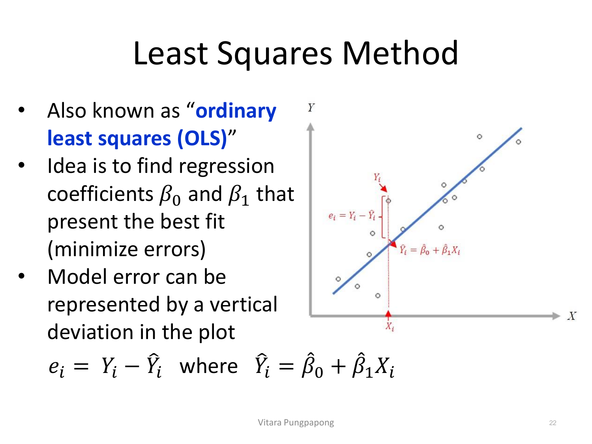
OLS เลือก \(\hat{\beta}_0, \hat{\beta}_1\) ที่ทำให้ผลรวมกำลังสองของ residual (SSE) น้อยที่สุด:
เหตุผลที่ยกกำลังสองแทนที่จะบวก residual ตรง ๆ: ถ้าบวกตรง ๆ residual บวกกับลบจะหักล้างกันจนผลรวมใกล้ศูนย์เสมอ (ทำให้ประเมิน fit ไม่ได้) ยกกำลังสองแก้ปัญหานี้และยังลงโทษ residual ที่มีขนาดใหญ่หนักกว่าสัดส่วน — จุดที่ห่างเส้นมากมีผลต่อ SSE รุนแรงกว่าจุดที่ห่างน้อยแบบไม่เป็นเชิงเส้น.
Correlation coefficient \(r_{xy}\) วัดความสัมพันธ์เชิงเส้นระหว่างสองตัวแปร มีค่าระหว่าง −1 ถึง 1:
จัดรูป \(\hat{\beta}_1\) ใหม่โดยหารทั้งเศษส่วนทั้งบนล่างด้วย \((n-1)\) จะเห็นว่า \(\hat{\beta}_1 = \dfrac{\text{COV}_{xy}}{S_x^2}\) — และเพราะ \(r_{xy} = \dfrac{\text{COV}_{xy}}{S_x S_y}\) จึงจัดรูปได้อีกขั้นเป็น:
สูตรนี้บอกอะไร: ความชันของเส้นถดถอยไม่ใช่แค่ทิศทางของ correlation (บวก/ลบตาม r_xy) แต่ยังถูกปรับสเกลด้วยอัตราส่วนความแปรปรวนของ Y ต่อ X ด้วย — X, Y คู่เดียวกันที่มี \(r_{xy}\) เท่ากันเป๊ะ อาจได้ \(\hat{\beta}_1\) ต่างกันมากถ้าหน่วยวัดของ Y "แกว่งแรง" กว่า X มาก (S_y ใหญ่กว่า S_x มาก) เทียบกับกรณี S_y ใกล้เคียง S_x — และในกรณี Simple Linear Regression (ตัวแปรอิสระเดียว) เท่านั้นที่ \(R^2 = r_{xy}^2\) พอดี (จะเห็นอีกครั้งในหัวข้อ 9).
ค่า correlation coefficient ที่ระดับต่าง ๆ หน้าตาเป็นอย่างไรในทางกราฟ:
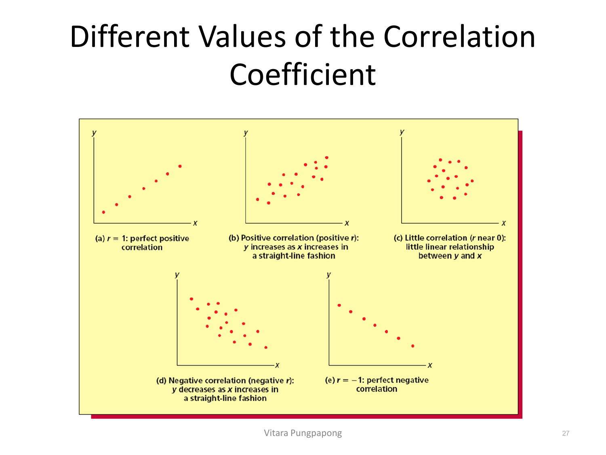
สังเกตแผง (c) "Little correlation (r near 0)" — จุดกระจายเป็นวงกลมไม่มีทิศทาง นี่คือรูปแบบเดียวที่ r ใกล้ 0 บอกว่า "ไม่มีความสัมพันธ์เชิงเส้น" — แต่ข้อควรระวัง 3 ข้อจากสไลด์: (1) ถ้าความสัมพันธ์เป็นแบบไม่เชิงเส้น (เช่นรูปโค้งในหัวข้อ 5) r จะประเมินความแรงของความสัมพันธ์ต่ำเกินจริง ทั้งที่ความสัมพันธ์นั้นแน่นมาก แค่ไม่ใช่เส้นตรง (2) เมื่อ n เล็ก ค่า r ไม่เสถียร แกว่งง่ายจากตัวอย่างสุ่ม (3) r ไม่ทนต่อ outlier — จุดผิดปกติจุดเดียวดึง r ให้เปลี่ยนไปมากได้.
lm() และการอ่าน summary() — ทักษะที่ 2ใน R ฟิตโมเดลด้วย lm(formula, data, subset, weights, na.action) — argument เดียวที่จำเป็นคือ formula (รูปแบบ y ~ x). object ที่ได้เป็น class lm ซึ่งมีฟังก์ชันมาตรฐานให้ดึงข้อมูลออกมา: summary() (ตารางผลวิเคราะห์แบบเต็ม), coef() (สัมประสิทธิ์), resid() (residual), fitted() (ค่าทำนาย), anova() (ตาราง ANOVA), predict() (ทำนายค่าใหม่), confint() (ช่วงความเชื่อมั่นของ β̂) — ทั้งหมดนี้จะได้ใช้จริงในบทนี้.
ฟิตโมเดลกับข้อมูล Automobile Data:
data<-data.frame(y=y, x=x)
model<-lm(y~x,data=data)
summary(model)ผลลัพธ์เต็มจาก summary(model) — นี่คือ output ที่ต้องอ่านให้ครบทุกบรรทัด:
Call:
lm(formula = y ~ x, data = data)
Residuals:
Min 1Q Median 3Q Max
-10.303 -8.432 -1.197 6.614 16.303
Coefficients:
Estimate Std. Error t value Pr(>|t|)
(Intercept) 23.333 6.873 3.395 0.00943 **
x 3.394 1.108 3.064 0.01548 *
---
Signif. codes: 0 '***' 0.001 '**' 0.01 '*' 0.05 '.' 0.1 ' ' 1
Residual standard error: 10.06 on 8 degrees of freedom
Multiple R-squared: 0.5399, Adjusted R-squared: 0.4824
F-statistic: 9.389 on 1 and 8 DF, p-value: 0.01548อ่านทีละส่วน:
* แปลว่า < 0.05)ประโยคแปลผลที่ถูกต้องของ \(\hat{\beta}_1 = 3.394\) ต้องอ้างหน่วยของทั้ง X และ Y เสมอ: "เมื่อ Time เพิ่มขึ้น 1 หน่วย (1 เดือน) Sales คาดว่าจะเพิ่มขึ้นโดยเฉลี่ย 3.394 หน่วย (จากข้อมูลตัวอย่างนี้)" — ห้ามเขียนว่า "X ทำให้ Y เพิ่มขึ้น" (นี่คือคำเชิงเหตุผล/causal ที่ข้อมูล observational พิสูจน์ไม่ได้ ตามหัวข้อ 2) ให้ใช้คำว่า "สัมพันธ์กับ" หรือ "คาดว่าจะเพิ่มขึ้นโดยเฉลี่ย" แทน
ส่วน \(\hat{\beta}_0 = 23.333\): "เมื่อ Time = 0 (จุดเริ่มต้นก่อนมีการสังเกต) ค่า Sales ที่คาดไว้คือ 23.333 หน่วย" — แต่ต้องระวัง: ถ้า X=0 อยู่นอกช่วงข้อมูลจริงที่สังเกตมา (extrapolation) การแปลผล intercept แบบนี้อาจไม่มีความหมายในทางปฏิบัติ ต้องเช็คก่อนว่า X=0 อยู่ในช่วงข้อมูลที่สมเหตุสมผลหรือไม่
สนใจทดสอบ \(H_0: \beta_1 = 0\) (X ไม่มีความสัมพันธ์เชิงเส้นกับ Y เลย) รูปแบบทั่วไปของ test statistic คือ \(\dfrac{\text{point estimate} - \text{ค่าคาดหวังภายใต้ } H_0}{SE[\text{point estimate}]}\). สำหรับ \(\beta_1\):
และสำหรับ \(\beta_0\) ใช้สูตรคล้ายกัน แทนที่ตัวส่วนด้วย \(SE[\hat{\beta}_0] = \sqrt{s^2\left(\dfrac{1}{n} + \dfrac{\bar{X}^2}{\sum (X_i-\bar{X})^2}\right)}\). ทั้งสองมี df = n−2 (เสีย 2 df ให้กับการประมาณ \(\beta_0\) และ \(\beta_1\)).
เชื่อมกับ output จริง: แถว x ในตาราง Coefficients คือผลการทดสอบ \(H_0: \beta_1=0\) พอดี — \(t = 3.394/1.108 = 3.064\) ตรงกับคอลัมน์ t value เป๊ะ, df=8 ตรงกับ "8 degrees of freedom" ที่บอกไว้ใต้ตาราง, และ \(\text{Pr}(>|t|) = 0.01548\) คือ p-value สองด้าน (two-tailed) ของการทดสอบนี้.
ช่วงความเชื่อมั่น \((1-\alpha)\%\) ของ β สร้างจาก point estimate ± critical value × SE:
ใน R ใช้ confint(object=model, level=0.95):
> confint(object=model, level=0.95)
2.5 % 97.5 %
(Intercept) 7.4851409 39.181526
x 0.8397719 5.948107แปลผล: "มั่นใจ 95% ว่าค่าจริงของ β₁ อยู่ระหว่าง 0.84 ถึง 5.95" — สังเกตว่าช่วงนี้ไม่ครอบคลุมศูนย์เลย (0 ไม่อยู่ระหว่าง 0.84 กับ 5.95) ซึ่งเป็นอีกวิธีสรุปแบบเดียวกับการทดสอบ p-value ในหัวข้อ 8 พอดี — กฎที่ต้องจำ: ถ้า \((1-\alpha)\%\) CI ของ β ไม่ครอบคลุม 0 แปลว่าปฏิเสธ \(H_0: \beta=0\) ที่ระดับนัยสำคัญ α ได้เลย โดยไม่ต้องดู p-value ซ้ำ — สองวิธีนี้ให้ข้อสรุปตรงกันเสมอในกรอบเดียวกัน
R² วัด "ความแรง" ของความสัมพันธ์ (ต่างจาก hypothesis test ที่บอกแค่ "มี/ไม่มี" ความสัมพันธ์):
ที่มา: ความเบี่ยงเบนรวมของ Y (Total SS) แตกออกเป็นสองส่วนเสมอ — ส่วนที่โมเดลอธิบายได้ (Explained SS, SSR) และส่วนที่อธิบายไม่ได้ (Unexplained SS, SSE):
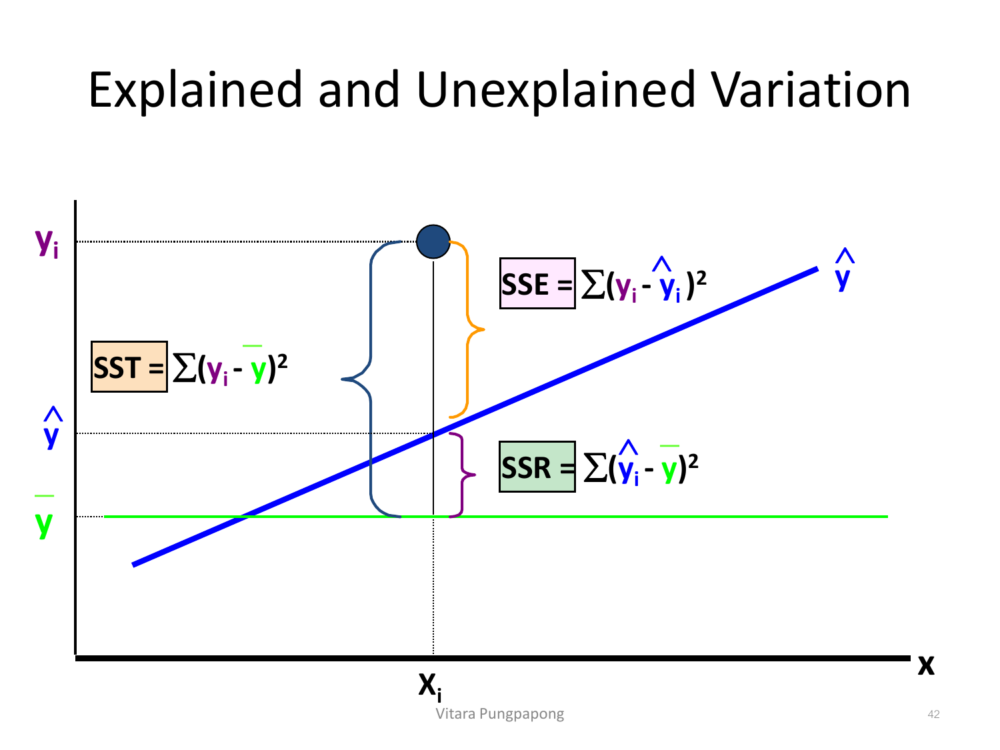
อ่านภาพ: ระยะห่างรวมจากจุด \(y_i\) ถึงเส้นค่าเฉลี่ย \(\bar{y}\) (SST) แตกเป็นสองท่อนต่อกัน — ท่อนบน (จาก \(y_i\) ถึงเส้นถดถอย \(\hat{y}\)) คือ SSE ที่โมเดลยังทายพลาด, ท่อนล่าง (จากเส้นถดถอยถึง \(\bar{y}\)) คือ SSR ที่โมเดลอธิบายได้จาก X. ถ้า SSE ท่อนบนสั้นมาก (จุดข้อมูลอยู่ใกล้เส้นถดถอยมาก) แปลว่าโมเดลอธิบายได้เกือบหมด R² จะเข้าใกล้ 1.
ยืนยันด้วย output จริง: Multiple R-squared: 0.5399 — X (Time) อธิบายความแปรปรวนของ Sales ได้ 53.99% ส่วนอีก 46.01% เป็นปัจจัยอื่นที่โมเดลนี้ไม่ได้จับไว้.
สไลด์เตือน 3 ความเข้าใจผิดที่พบบ่อยเกี่ยวกับ R²:
อีกวิธีทดสอบ \(H_0: \beta_1=0\) คือ F-test:
| Source | df | Sum Sq | Mean Sq | F |
|---|---|---|---|---|
| Regression | 1 | SSR | MSR=SSR/1 | F=MSR/MSE |
| Error | n−2 | SSE | MSE=SSE/(n−2) | |
| Total | n−1 | |||
ตาราง ANOVA จริงจาก R (anova(model)):
> anova(model)
Analysis of Variance Table
Response: y
Df Sum Sq Mean Sq F value Pr(>F)
x 1 950.3 950.30 9.3892 0.01548 *
Residuals 8 809.7 101.21เช็คความสอดคล้อง: \(F = 9.3892\) ตรงกับ F-statistic: 9.389 ใน summary(model) เป๊ะ และ \(t^2 = 3.064^2 = 9.388 \approx F\) (คลาดเคลื่อนจากการปัดเศษ) — ยืนยันว่า t-test กับ F-test ให้ข้อสรุปเดียวกันในกรณี SLR จริงตามทฤษฎี
มีสองคำถามที่ดูคล้ายกันแต่ไม่ใช่เรื่องเดียวกัน: (1) ค่าเฉลี่ยของ Y ที่ X=X₀ คือเท่าไร (mean response) กับ (2) ค่า Y ตัวใหม่ตัวหนึ่งที่ X=X₀ จะเป็นเท่าไร (prediction) — point estimate ของทั้งคู่เท่ากันคือ \(\hat{Y} = \hat{\beta}_0+\hat{\beta}_1 X_0\) แต่ interval estimate ต่างกัน:
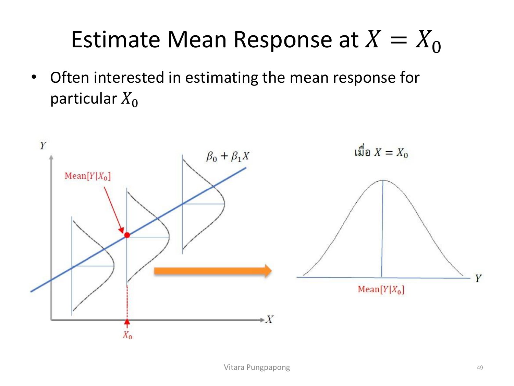
Mean response ที่ X₀ คือการถามหาจุดศูนย์กลางของระฆังทฤษฎีที่ X₀ — ความไม่แน่นอนมีแค่แหล่งเดียวคือความไม่แน่นอนในการประมาณ β̂₀, β̂₁ จากข้อมูลตัวอย่าง:
ส่วน prediction ที่ X₀ คือการถามหาค่า Y สังเกตใหม่หนึ่งตัว ที่จะสุ่มออกมาจากระฆังทฤษฎีลูกนั้น — ไม่ใช่แค่จุดศูนย์กลางของระฆัง แต่เป็นค่าที่กระจายไปทั่วทั้งระฆังได้:
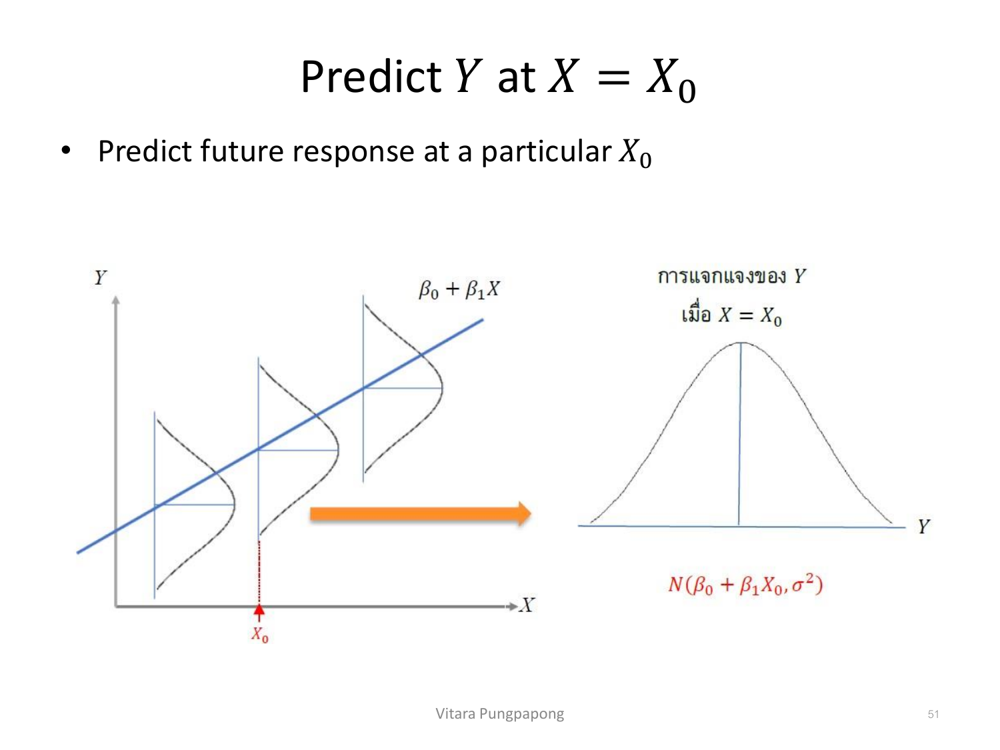
เทียบสองสูตร SE ให้ดี: สูตร prediction มี "+1" เพิ่มเข้ามาในรากที่สอง ซึ่งไม่มีในสูตร mean response — พจน์ "+1" นี้คือความแปรปรวนของค่าสังเกตใหม่หนึ่งตัวรอบ ๆ ค่าเฉลี่ยทฤษฎี (ตัว Y เองยังสุ่มได้ตามระฆัง แม้จะรู้ค่าเฉลี่ยทฤษฎีแน่นอนแล้วก็ตาม) ดังนั้น prediction interval กว้างกว่า confidence interval ของ mean response เสมอ ที่ X₀ เดียวกัน — เป็นความจริงทางคณิตศาสตร์ ไม่ใช่แค่บังเอิญจากข้อมูลชุดใดชุดหนึ่ง
ใน R ใช้ predict(object, newdata, interval=c("none","confidence","prediction"), level=0.95) ตัวอย่างทำนาย Sales ที่ Time=5 และ Time=7 แบบ prediction interval:
> newdata<-data.frame(x=c(5,7))
> predict(model, newdata=newdata, interval="prediction")
fit lwr upr
1 40.30303 15.93783 64.66824
2 47.09091 22.45941 71.72241เช็คตัวเลข: ที่ x=5, \(fit = 23.333 + 3.394\times5 = 40.303\) ตรงกับ \(\hat{Y} = \hat{\beta}_0+\hat{\beta}_1 X\) จากหัวข้อ 7 พอดี — ช่วง 95% prediction interval กว้างถึง 48.7 หน่วย (15.9 ถึง 64.7) ทั้งที่ point estimate อยู่กลาง ๆ พอดีที่ 40.3 — สะท้อนว่าตัวอย่างมีแค่ n=10 จุด ทำให้ยังไม่แน่ใจมากนักในการทำนายค่าสังเกตใหม่แต่ละตัว
ขยายจาก "จุดเดียว X₀" ไปเป็น "ทั้งเส้นถดถอย" — confidence band คือกลุ่มของ mean-response CI ที่ทุกค่า X ต่อกันเป็นแถบ, ส่วน prediction interval band คือกลุ่มของ PI ที่ทุกค่า X ต่อกัน:
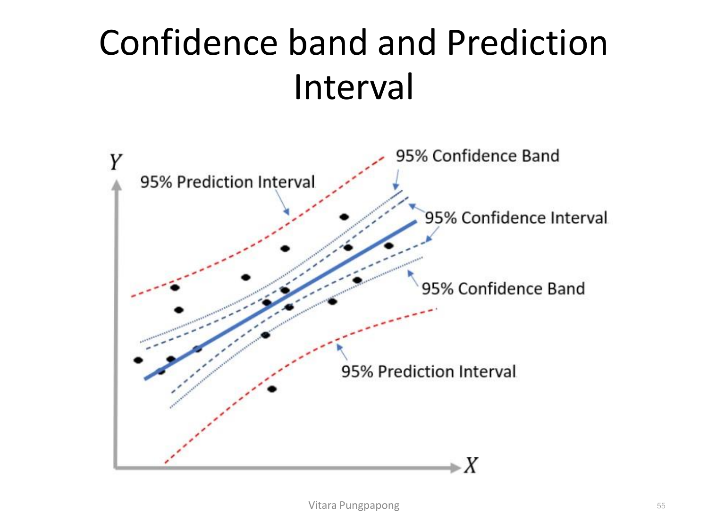
อ่านภาพ: เส้นประสีน้ำเงิน (95% Confidence Band) แนบชิดเส้นถดถอยสีน้ำเงินตลอดช่วง เพราะเป็นความไม่แน่นอนของ "ค่าเฉลี่ย" เท่านั้น ส่วนเส้นประสีแดง (95% Prediction Interval) ห่างออกไปมากกว่าอย่างชัดเจนตลอดทั้งเส้น ครอบคลุมจุดข้อมูลจริง (วงกลมดำ) เกือบทั้งหมดไว้ข้างใน — ตรงกับส่วน "+1" ในสูตร SE ของหัวข้อ 11 พอดี ที่ทำให้แถบ prediction กว้างกว่าแถบ confidence เสมอทุกจุดบนเส้น ไม่ใช่แค่บางช่วง
ผลลัพธ์จริงจากข้อมูล Automobile Data เมื่อคำนวณทั้งสองแถบด้วย R (predict(..., se.fit=TRUE) ตามสูตร Working–Hotelling \(W=\sqrt{2F_{(1-\alpha,\,2,\,n-2)}}\) สำหรับ band และสูตร PI ปกติสำหรับแถบนอก) แล้วพล็อตทับข้อมูลจริง:
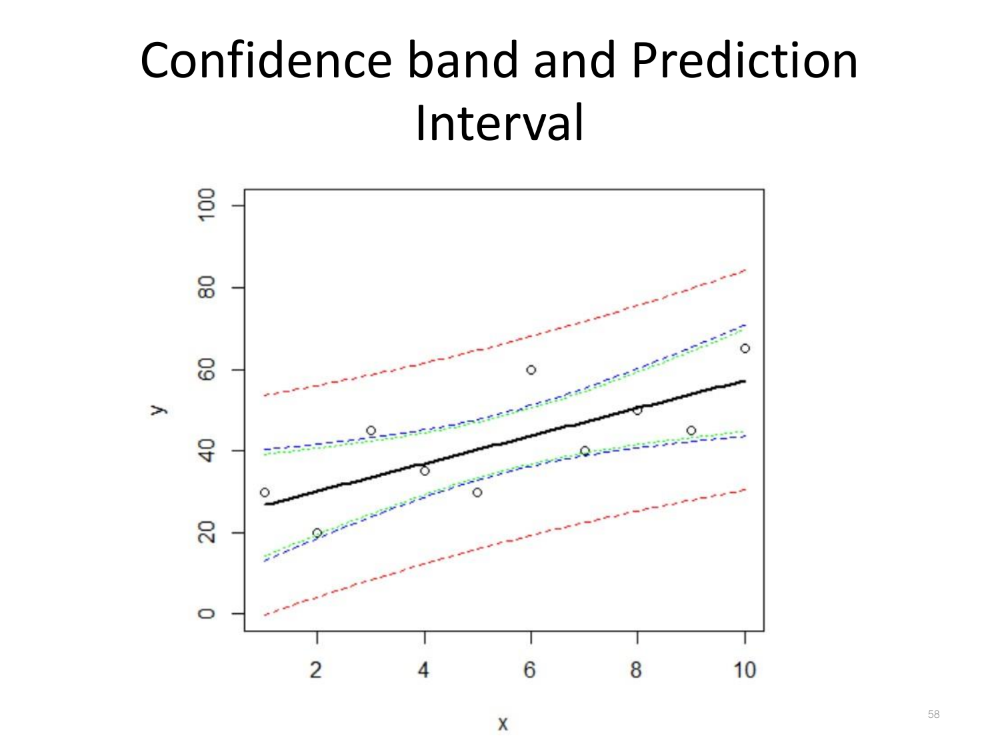
สังเกตแถบในสุด (เขียว/น้ำเงิน ประ) แคบกว่าแถบนอกสุด (แดง ประ) มาก และแถบทั้งคู่บีบแคบที่สุดตรงกลาง (ใกล้ X̄=5.5) แล้วบานออกที่ปลายทั้งสองข้าง (X=1 และ X=10) — ตรงกับพจน์ \((X_0-\bar{X})^2\) ในสูตร SE ทั้งสองแบบ: ยิ่ง X₀ ห่างจากค่าเฉลี่ย X̄ มาก ความไม่แน่นอนยิ่งสูง เพราะข้อมูลตัวอย่างเบาบางกว่าที่ขอบเทียบกับตรงกลาง
summary(lm(...)) ได้ครบทุกบรรทัดพร้อมเชื่อมแต่ละตัวเลขกับสูตรที่มาของมัน, เขียนประโยคแปลผลสัมประสิทธิ์ที่ไม่ใช้คำเชิงเหตุผลผิด ๆ, และแยกความต่างระหว่าง confidence interval ของ mean response กับ prediction interval ได้ทั้งจากสูตรและจากภาพ — ทักษะทั้งหมดนี้จะถูกใช้ซ้ำและขยายผลใน Lecture 2 (Multiple Linear Regression) เป็นต้นไป
ตารางนี้ไล่ทุกหน้าของ Lecture1.pdf ตั้งแต่หน้า 1 ถึง 58 — หน้าที่มี ✓ ถูกอธิบายและ/หรือใส่รูปในเนื้อหาข้างบนแล้ว ส่วนที่เหลือ (etc) เป็นหน้าปก/หน้าคั่น/R syntax อ้างอิงล้วน ๆ ที่ไม่มีเนื้อหาทฤษฎีใหม่ให้ทำ quiz เพิ่ม
| หน้า | เนื้อหา | สถานะ |
|---|---|---|
| 1 | ปกเรื่อง "Lecture 1: Simple Linear Regression" | etc — ปก |
| 2 | Deterministic vs Probabilistic Model — ตัวอย่าง deterministic (Profit) | ✓ หัวข้อ 1 |
| 3 | Deterministic vs Probabilistic Model — นิยาม probabilistic | ✓ หัวข้อ 1 |
| 4 | Introduction to Regression Methods — เป้าหมาย/คำศัพท์ X,Y | ✓ หัวข้อ 2 |
| 5 | A Brief History of Regression — Galton/Pearson/Edgeworth/Yule | ✓ หัวข้อ 2 |
| 6 | Galton's diagram based on Table I (ภาพประกอบประวัติศาสตร์) | etc — ภาพซ้ำแนวคิดกับหน้า 7 ที่ใช้แทนแล้ว |
| 7 | Rate of Regression in Hereditary Stature (Galton 1886) | ✓ หัวข้อ 2 (มีรูป) |
| 8 | Associative vs Causal Inference — confounder (ไอศกรีม/นักท่องเที่ยว/อุณหภูมิ) | ✓ หัวข้อ 2 (มีรูป) |
| 9 | Associative vs Causal Inference — experimental design (แสง/ต้นทานตะวัน) | ✓ หัวข้อ 2 (มีรูป) |
| 10 | Strengths and Weaknesses of Linear Regression | ✓ หัวข้อ 2 |
| 11 | Simple Linear Regression — นิยามโมเดล Y_i=β₀+β₁X_i+ε_i | ✓ หัวข้อ 3 |
| 12 | Assumptions on Error Terms — รายการ 4 ข้อ + ภาพ scatter | ✓ หัวข้อ 4 (มีรูป) |
| 13 | Assumptions on Error Terms — ภาพ implication (Ramsey&Schafer) | ✓ หัวข้อ 4 (มีรูป) |
| 14 | Linear Regression Model when p=1 — ภาพเส้นถดถอย | ✓ หัวข้อ 3 (มีรูป) |
| 15 | Scatter Plot — 4 รูปแบบความสัมพันธ์ | ✓ หัวข้อ 5 (มีรูป) |
| 16 | Scatter Plot in R — args ของ plot() | ✓ หัวข้อ 5 |
| 17 | Graphical Parameters — cex options | etc — R syntax อ้างอิง ดูตารางในบทเรียนสรุปสั้นแล้ว |
| 18 | Graphical Parameters — pch symbols (ภาพ) | etc — R syntax อ้างอิงล้วน ๆ ไม่มีเนื้อหาทฤษฎี |
| 19 | Graphical Parameters — lty/lwd (ภาพ) | etc — R syntax อ้างอิงล้วน ๆ ไม่มีเนื้อหาทฤษฎี |
| 20 | Example: Automobile Data — ตาราง + scatter | ✓ หัวข้อ 5 (มีรูป) |
| 21 | Example: Automobile Data (revisited) — โค้ด R + plot | ✓ หัวข้อ 5 (มีรูป) |
| 22 | Least Squares Method — แนวคิด + ภาพ residual | ✓ หัวข้อ 6 (มีรูป) |
| 23 | Least Squares Method — สูตร SSE, β̂₀, β̂₁ | ✓ หัวข้อ 6 |
| 24 | Correlation Coefficients — นิยามทั่วไป | ✓ หัวข้อ 6 |
| 25 | Correlation Coefficients — สูตร S_x², S_y², COV_xy, r_xy | ✓ หัวข้อ 6 |
| 26 | Simple Regression and the Correlation Coefficient — β̂₁=r(S_x/S_y) | ✓ หัวข้อ 6 |
| 27 | Different Values of the Correlation Coefficient (ภาพ 5 แผง) | ✓ หัวข้อ 6 (มีรูป) |
| 28 | Cautions in Using Correlation | ✓ หัวข้อ 6 |
| 29 | Fitting a Regression Model in R — lm() args | ✓ หัวข้อ 7 |
| 30 | Class lm — ฟังก์ชัน generic (summary, coef, resid ฯลฯ) | ✓ หัวข้อ 7 |
| 31 | Example: Automobile Data (revisited) — โค้ด lm()/summary() | ✓ หัวข้อ 7 |
| 32 | Example: Automobile Data (revisited) — ผล summary() เต็ม + สมการ | ✓ หัวข้อ 7 |
| 33 | Estimation of Error Term Variance σ² — สูตร SSE, s² | ✓ หัวข้อ 7 (อ้างถึง Residual standard error) |
| 34 | Estimation of Error Term Variance σ² — R output ซ้ำ | ✓ หัวข้อ 7 |
| 35 | Inferences in Simple Linear Regression — รูปแบบ test statistic ทั่วไป | ✓ หัวข้อ 8 |
| 36 | Testing β₁ — สูตร t, SE[β̂₁] | ✓ หัวข้อ 8 |
| 37 | Testing β₀ — สูตร t, SE[β̂₀] | ✓ หัวข้อ 8 |
| 38 | Results from R — output ซ้ำ (เชื่อมกับ t-test) | ✓ หัวข้อ 8 |
| 39 | Confidence Interval for β₀ and β₁ — สูตร + confint() output | ✓ หัวข้อ 9 |
| 40 | Coefficient of Determination — นิยาม R², R²=SSR/SST | ✓ หัวข้อ 10 |
| 41 | Coefficient of Determination — การแตกตัว SST=SSE+SSR | ✓ หัวข้อ 10 |
| 42 | Explained and Unexplained Variation — ภาพแตกตัว SST/SSE/SSR | ✓ หัวข้อ 10 (มีรูป) |
| 43 | Coefficient of Determination — R output ซ้ำ | ✓ หัวข้อ 10 |
| 44 | 3 Common Misunderstandings of R² | ✓ หัวข้อ 10 |
| 45 | F-test — สูตร F=MSR/MSE, ความสัมพันธ์กับ t² | ✓ หัวข้อ 10 |
| 46 | F-test — ตาราง ANOVA สำหรับ regression | ✓ หัวข้อ 10 |
| 47 | ANOVA Table — anova(model) R output | ✓ หัวข้อ 10 |
| 48 | Results from R — summary() output ซ้ำ (เชื่อมกับ F-test) | ✓ หัวข้อ 10 |
| 49 | Estimate Mean Response at X=X₀ — ภาพระฆังบนเส้น | ✓ หัวข้อ 11 (มีรูป) |
| 50 | Estimate Mean Response at X=X₀ — สูตร point/interval estimate | ✓ หัวข้อ 11 |
| 51 | Predict Y at X=X₀ — ภาพระฆัง | ✓ หัวข้อ 11 (มีรูป) |
| 52 | Predict Y at X=X₀ — สูตร point/interval estimate (PI) | ✓ หัวข้อ 11 |
| 53 | Prediction using Regression Equation — predict() function + ตัวอย่าง | ✓ หัวข้อ 11 |
| 54 | Confidence Band — สูตร Working-Hotelling | ✓ หัวข้อ 12 |
| 55 | Confidence Band and Prediction Interval — ภาพรวมแนวคิด | ✓ หัวข้อ 12 (มีรูป) |
| 56 | Confidence Band and Prediction Interval — โค้ด R (คำนวณ band) | ✓ หัวข้อ 12 (สรุปแนวคิด ไม่ยกโค้ดเต็ม) |
| 57 | Confidence Band and Prediction Interval — โค้ด R (พล็อต) | ✓ หัวข้อ 12 (สรุปแนวคิด ไม่ยกโค้ดเต็ม) |
| 58 | Confidence Band and Prediction Interval — ผลจริงจาก R (ภาพ) | ✓ หัวข้อ 12 (มีรูป) |
สงสัยตรงไหน ถามได้เลยในแชท — ผมเป็นผู้สอนของคุณ ถามซ้ำได้ ถามลึกได้ ไม่ต้องเกรงใจ